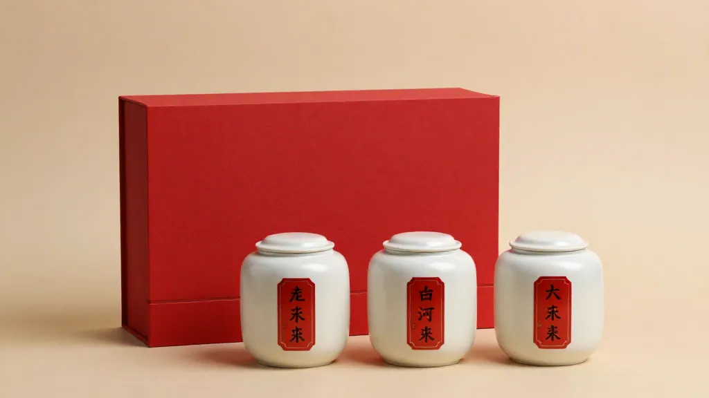

那天傍晚，凤凰溪的水声比往常响些——前一夜下过一阵秋雨。
阿凤姐把最后一箱中秋礼盒搬上三轮车，正要回店，手机震了一下。儿媳妇转发的财经新闻，标题吓人——"112家连锁茶饮品牌、上半年新开1.8万家、关1.12万家；六家上市茶饮企业营收增9%、净利润反降2%"。
她看完把手机收进口袋，没吱声。
店门口，文锡誉师傅正蹲在地上用竹扫把扫地。茶厂里飘出来的炭焙香还没散完，山雾把凤凰镇拢得紧紧的。
一、文师傅没接她的新闻
"文伯，今天茶饮圈出大事了。"
阿凤姐把三轮车支好，把那条新闻念给他听。文锡誉抬了抬头，手里的扫把没停。
"加9减2，"他慢吞吞地重复，"营收涨了，利润跌了。"
"对，比开店还累。新茶饮这两年太疯了——凤凰单丛的茶青被他们收得嗷嗷叫，今年鸭屎香鲜叶头茬报到两百二一市斤，去年才一百五。"
文师傅站起身，扫把靠在门框上，拍了拍手上的灰："那是好事。"
"好事？"
"茶农赚到钱了，是好事。我们镇子这两年修路、盖民宿、做茶旅，哪一分钱不是从茶青里来的？"他顿了一下，"可你念的那个'加9减2'——加的是门店数，减的是每家店赚的钱。"
他把目光投向远处的乌岽山："跟我们的茶，是一个道理。"
阿凤姐没接话。她知道文师傅要说什么。
二、第三轮中秋：文师傅眼里的三个中秋
文锡誉今年六十七，做凤凰单丛已经做了四十九年。今年中秋，是他经历过的"第三个中秋"。
"第一个中秋，是2003年。"他坐在茶厂的竹椅上，慢慢讲。
"那年非典刚过，整个茶市死气沉沉。凤凰镇的茶农没什么文化，但记得一件事——五月份封村的时候，没人买茶；中秋前突然有人上门订中秋礼盒，一订就是三百斤五百斤。我那年三十五，第一次晓得：原来中秋这档生意，是救命的。"
阿凤姐在心里算了一下——2003年中秋，文师傅一家靠那批中秋礼盒撑过了非典后的半年。
"第二个中秋，是2017年。"他接着说。
"那年鸭屎香刚刚'出圈'——其实也不是真的出圈，是广州、深圳几家奶茶店开始用凤凰单丛做茶基底。最早的是'鸭屎香柠檬茶'，后来是'鸭屎香拿铁'。那年茶青从八十块涨到一百二，大家都觉得天上掉钱。"
"可我记得那年中秋，凤凰镇开了八家新茶饮店——就是那种小小的奶茶档，门口挂凤凰单丛的招牌，卖十三块一杯的柠檬茶。半年之后，全关了。"
文师傅比了个三："关了三家。剩五家，转型去卖单丛奶茶、潮式茶饮、文创包装茶。"
"那八家新店，跟今年这条新闻有啥不一样？"阿凤姐问。
文师傅没回答，从竹椅边上抽出一只小茶壶，慢慢泡。
"你要问的是这个'加9减2'到底会不会落到凤凰镇头上。"
阿凤姐点头。
三、加9减2，落在凤凰镇是什么样子
茶汤冲出来，文师傅没喝，先把鼻子凑过去闻。
"2026年上半年，全国112家连锁茶饮品牌新开1.8万家、关1.12万家——开闭店比才1.61。换句话说，每开1.6家就关1家。这数字比2024年的2.4、2023年的3.2都低。"
"再讲那六家上市的——营收涨9%，净利反降2%——'增收不增利'，这话在行内叫'卖得多了、赚得少了'。要么是价格战，要么是原料涨价，反正有一头被吃掉。"
阿凤姐的手在桌下攥紧了。
"落到我们镇上，"文师傅继续说，"第一种落法是——茶青价格先涨后跌。今年头茬鸭屎香两百二一市斤，是新茶饮撑起来的价格；可他们现在每开1.6家就关1家，门店收缩，茶青需求就要跌。明年中秋前的鲜叶价格，会不会再跌回一百二？"
他停了一下："跌回一百二，茶农是要骂人的。"
"第二种落法是——咱们镇上的小茶饮档又开始开。跟2017年一个样——看到凤凰单丛火了就开店，看到新茶饮退烧就关店。这些小店一年半载一轮，'加9减2'的戏，对他们最准。"
"第三种落法——也是对咱们最要紧的——传统门店开始被新茶饮'卷'价格。"文师傅把手里的茶汤端起来，轻轻啜了一口，"鸭屎香柠檬茶在外面卖十三块一杯，茶叶成本才两三块；可中秋礼盒里一包125克的凤凰单丛，要卖八十块。这种'对比'一旦传到客户耳朵里，传统门店就难做。"
阿凤姐终于明白文师傅为什么不肯接那条新闻了——
不是因为他不懂，是他太懂了。
四、还有三天，文师傅的"第三次中秋"
"可你还是要把中秋做好。"阿凤姐说。
文师傅点头："茶青价跌不回一百二——跌回一百二，茶农就不管茶园了；不管茶园，凤凰单丛的牌子就倒了。这才是大麻烦——比新茶饮退烧还大的麻烦。"
他站起身，从茶叶罐里捏出一小撮鸭屎香，放在电子秤上："所以今年中秋，我不拼量，拼'实'。每一包鸭屎香我都亲自焙、亲自审，外山的鲜叶一斤不收，老丛的一斤不降——这样客户拿到手，一泡就知道：'文师傅做的，跟新茶饮店里的柠檬茶不一样。'"
阿凤姐看着他，忽然想起2003年那个"救命的中秋"。
"文伯，您这第三次中秋——"
"第三次中秋，我想做'打底的中秋'。"他低头看着竹筛里的茶叶，慢慢说，"新茶饮火了，我们没垮；新茶饮退烧，我们也不用慌。我们守的是凤凰山这片山场、这一百棵百年老丛、这条从祖师爷传下来的炭焙手艺——这才是凤凰单丛真正的底。"
他抬眼看向乌岽山顶的云雾："九月二十五，月亮会照在这座山上。一千年了，每一年的中秋都照过。今年照的时候，会不会有人多看一眼这片茶山——不要紧，关键是：还有人在认真做茶。"
天色暗下来，凤凰溪的水声越来越响。
阿凤姐把那箱中秋礼盒推到文师傅面前："文伯，这一箱您留着——送您的老茶友。"
文师傅愣了一下，没接，只问："你店里的林先生夫妇，下午来不来？"
"来。"
"让他们带个小本子。"文师傅笑，"我教他们一句——"
"'新茶饮退烧也好、加9减2也罢，中秋送凤凰单丛，送的是山场、是焙火、是做茶人的心。这三样，新茶饮店学不去。'"
阿凤姐笑出声，抱着剩下的礼盒上车，往山下骑。
凤凰山的雾把这爷俩的影子吞进去——可明天太阳一出来，又是新的一天。
还有三天，就是中秋。